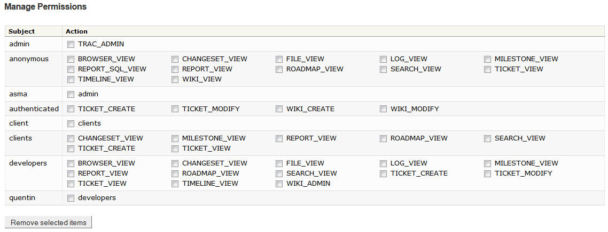

Table of Contents
Connexion SSH au serveur Ubuntu en utilisant Putty
login as:systemsystem@Log240-20133-14.logti.etsmtl.ca's password:Linux log240-20133-14 2.6.32-51-generic-pae #113-Ubuntu SMP Wed Aug 21 20:02:16 UTC 2013 i686 GNU/Linux Ubuntu 10.04.4 LTS Welcome to Ubuntu! * Documentation: https://help.ubuntu.com/ System information as of Mon Sep 16 15:48:01 EDT 2013 System load: 0.53 Memory usage: 18% Processes: 75 Usage of /: 76.1% of 4.92GB Swap usage: 0% Users logged in: 0 Graph this data and manage this system at https://landscape.canonical.com/ 6 packages can be updated. 3 updates are security updates. New release 'precise' available. Run 'do-release-upgrade' to upgrade to it. Last login: Mon Sep 16 15:45:09 2013 from logti-a3324-19.ens.ad.etsmtl.casystem@log240-20133-14:~$
Note
Par soucis de clarté, l'invite de commande du shell (prompt) sera abrégé $ par la suite.
$cd /opt$sudo /bin/chown -R www-data:svnusers svn[sudo] password for system: $sudo /bin/chmod -R u+wrx,g+wrx,o-wrx svn$sudo /usr/bin/svnserve -d$sudo /usr/sbin/useradd client -G svnusers -c "Utilisateur client (BudgetPersonnel2000)" -m$sudo /usr/bin/passwd clientEnter new UNIX password: Retype new UNIX password:passwd: password updated successfully
 |
Exportation du dépot SVN en utilisant TortoiseSVN
 |
Confirmation du mot de passe SVN
 |
Résultat de l'exportation SVN
 |
Vérification de l'importation SVN
 |
Succès du test d'importation
 |
Connexion à l'interface web de Trac en admin
|  |
Modifications des permissions clients et développeurs